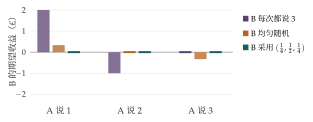

STEP I 1989，第 16 题
继续之前，请先阅读题目（原题为英文）。题目载于 STEP Support Programme 的题目资料库： step.maths.org/questions/89-s1-q16
引子
玩“包剪揼”时，任何固定的出法都会被对手利用：每次都出揼（石头），对手很快便学会出包（布）。唯一稳妥的策略就是随机出手。本题是一个更精细的版本：各种结果的得失并不相等，怎样随机化才对也并不明显。结果发现，只要以概率 \(\frac14\)、\(\frac12\)、\(\frac14\) 分别猜 \(1\)、\(2\)、\(3\)，不论对手怎样做，玩家都可以保证长远而言不会输钱。
这让我们初次窥见冯纽曼（John von Neumann）在 1928 年提出的极小极大定理（minimax theorem），它是博弈论（game theory）的奠基结果：在任何一方所得即另一方所失的二人博弈中，双方各有一个随机化策略（randomised strategy），能保证在对手发挥得完美无瑕时，仍取得可能范围内的最佳结果。
动笔之前
写出一个表，列出每一对猜测之下 B 赢得的金额（B 的猜测列于左侧，A 的猜测列于顶端）。
按规则逐一推算（例如，若 B 说 \(1\) 而 A 说 \(3\)，两数相差 \(2\)，说出较小数的 B 要付 £2）：
| B \(\backslash\) A | \(1\) | \(2\) | \(3\) |
|---|---|---|---|
| \(1\) | \(0\) | \(+1\) | \(-2\) |
| \(2\) | \(-1\) | \(0\) | \(+1\) |
| \(3\) | \(+2\) | \(-1\) | \(0\) |
这个表是反对称（antisymmetric）的（把两位玩家对调，正负号便会改变），所以这个博弈是公平的，意思是双方都没有与生俱来的优势。
逐步解题
阶段 1 对付固定的猜测
若 A 每次都说 \(1\)，B 应该说 \(3\)，每局赢 £2。若 A 每次都说 \(2\)，B 说 \(1\)，赢 £1。若 A 每次都说 \(3\)，B 说 \(2\)，赢 £1。任何固定的猜测都会被对手利用。
阶段 2 对付随机的猜测
若 A 以均匀的概率随机猜测，当 B 说 \(j\) 时，B 的期望收益（expected gain）是多少？（求表中第 \(j\) 行的平均值。）
各行的平均值分别是：\(j = 1\) 时为 \(\frac13(0 + 1 - 2) = -\frac13\)，\(j = 2\) 时为 \(0\)，\(j = 3\) 时为 \(\frac13(2 - 1 + 0) = \frac13\)。所以 B 每局赢得金额的期望值是 \[-\tfrac13b_1 + 0\cdot b_2 + \tfrac13b_3,\] 当 \(b_3 = 1\) 时取得最大值：每次都说 \(3\)，平均每局赢 \(\frac13\) 镑。均匀的随机化并不能保护 A。
阶段 3 一般情况
现在设 A 以概率 \(a_j\) 说 \(j\)。把 B 赢得金额的期望值按 A 的猜测归项：\(a_1\) 的系数（即第 \(1\) 列以 \(b_j\) 为权的加权平均）是甚么？
沿着表中各列由上而下读， \[\text{B 赢得金额的期望值} = (-b_2 + 2b_3)a_1 + (b_1 - b_3)a_2 + (-2b_1 + b_2)a_3,\] 所以 \(X = -b_2 + 2b_3\)，\(Y = b_1 - b_3\)，\(Z = -2b_1 + b_2\)。
你能令三者同时为零吗？（共有三条方程，但它们并非独立；为甚么？）
它们并非独立：\(X + 2Y + Z = 0\) 恒成立（请自行验证）。所以由 \(Y = 0\) 得 \(b_1 = b_3\)，由 \(X = 0\) 得 \(b_2 = 2b_3\)，两者合起来便迫使 \(Z = 0\) 亦成立。再配合 \(b_1 + b_2 + b_3 = 1\)： \[b_1 = \tfrac14, \qquad b_2 = \tfrac12, \qquad b_3 = \tfrac14,\] 于是 \(X = Y = Z = 0\)。这样，不论 \(a_j\) 取甚么值，B 赢得金额的期望值都是 \(0\)，B 长远而言不会有任何损失。■

回顾
写出得失表。所有推理都围绕一个 \(3 \times 3\) 矩阵的行和列。
纯策略（pure strategy）会被对手利用。面对任何固定的猜测，甚至面对均匀随机的猜测，对手都有一个有利可图的应对方法。
拉平。稳妥的策略令对手选甚么都没有分别：A 的每一种选择都带来相同的期望结果。
背后的数学
极小极大定理
在一个二人零和（zero-sum）博弈中，设得失矩阵（payoff matrix）为 \(M\)，B 选取概率 \(\mathbf{b}\)，A 选取概率 \(\mathbf{a}\)，则 B 赢得金额的期望值是 \(\mathbf{b}^{\mathsf T}M\mathbf{a}\)。冯纽曼的极小极大定理指出 \[\max_{\mathbf b}\min_{\mathbf a}\mathbf{b}^{\mathsf T}M\mathbf{a} = \min_{\mathbf a}\max_{\mathbf b}\mathbf{b}^{\mathsf T}M\mathbf{a}.\] 用文字说：B 预先公开自己的随机化策略而仍能保证取得的金额，等于 A 预先公开自己的策略而能把 B 压制到的金额。这个共同的数值称为博弈的值（value）。在本题中，由反对称性可知博弈的值是 \(0\)，而策略 \((\frac14, \frac12, \frac14)\) 对双方都是最优的。这个定理可用线性代数（linear algebra）和凸性（convexity）证明（它等价于线性规划（linear programming）的对偶定理），而它推广到多人博弈的版本，即纳殊均衡（Nash equilibrium），为纳殊（John Nash）赢得诺贝尔经济学奖。
为甚么要随机化？
这里的随机性无关运气，而是关乎信息。如果 B 的选择可以被预测，A 便能加以利用；B 以恰当的概率随机选择，既令自己的选择无从预测，又确保任何预测都帮不了对手。现实中的例子包括足球的十二码罚球——对职业球员的研究发现，主射球员和守门员在左右两边之间随机选择，比例与博弈论的最优值十分接近——以及网球的发球。
冯纽曼在 1928 年证明了极小极大定理，论文题为“On the theory of games of strategy”（论策略博弈的理论），研究动机来自扑克，因为扑克中的“偷鸡”（bluffing，即虚张声势）正是一种随机化。1944 年，他与经济学家 Oskar Morgenstern 出版了 Theory of Games and Economic Behavior（博弈论与经济行为），博弈论自此成为一门学科。冯纽曼后来忆述，他一直视极小极大定理为关键结果，没有它，就没有值得发表的博弈理论。
思维技巧
当任何固定的选择都会被对手利用时，就随机选择，而所用的概率要令对手无论选哪一项都没有分别。
在大学里，博弈论、线性规划和算法理论都会用到这个想法。例如，随机算法（randomised algorithm）会作出任何对手都无法预测的随机选择，借此防范最坏情况的输入。
延伸练习
A 的最佳应对。若 B 采用 \((\frac14, \frac12, \frac14)\)，证明 A 的每一种策略所得的期望值都是 \(0\)。若 B 改用 \((\frac13, \frac13, \frac13)\)，求 A 的最佳应对。
包剪揼。写出“包剪揼”的得失矩阵，并求最优策略。为甚么这里的最优策略是均匀的，而本题的却不是？
唯一性。证明 \((\frac14, \frac12, \frac14)\) 是 B 能保证不输的唯一策略。（提示：它必须令 \(X\)、\(Y\)、\(Z\) 全部非负；利用 \(X + 2Y + Z = 0\)。）
改动后的博弈。若相差 \(2\) 时的罚款由 £2 改为 £3，求最优策略。
延伸阅读
Ken Binmore, Playing for Real（Oxford University Press）。一本详尽而平易近人的博弈论入门书。
Avinash Dixit & Barry Nalebuff, The Art of Strategy（Norton）。以体育和商业的例子讲解博弈论。
William Poundstone, Prisoner’s Dilemma（Anchor）。冯纽曼、博弈论与冷战。